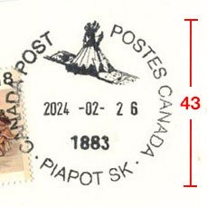

Piapot PO pictorial cancel
First nation symbol
- Status
- Active
- Run dates
- ? to present
- Design
- first nation symbol
- Ink colour
- Black
- Designer
- Unknown
- Post office
- Piapot PO
40 McDonald St
Piapot, SK
S0N 1Y0 - Subjects
- first nation, symbol, housing
Collect it by mail. Send your stamped covers, with a stamped return envelope, to the post office address above. How to collect pictorial cancels by mail · en français
 Eastend PO2nd Scotty
Eastend PO2nd Scotty Eastend PO1st Scotty
Eastend PO1st Scotty Eastend PO3rd Scotty
Eastend PO3rd Scotty Fox Valley POFox, sand dune, maple leaf
Fox Valley POFox, sand dune, maple leaf